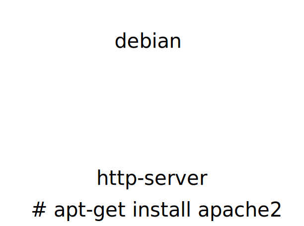

Drupal c'est...
...du code PHP, une base SQL,
et des fichiers
Déploiement et exécution d'applications
Linux CGroups
Sur une même machine, en partageant le même noyau.
Permettent de regrouper dans un seul ensemble :
et le distribuer en lui donnant un nom :
group/name:tag
Dev / CI | Run
Les images sont structurées en couche
Une image stocke les modifications apportées à une image parente
root@debian-jessie:~# docker run -ti centos:7 /bin/bash
[root@90d24805dacb /]# ps ax
PID TTY STAT TIME COMMAND
1 ? Ss 0:00 /bin/bash
13 ? R+ 0:00 ps ax
root@debian-jessie:~# ps afx
PID TTY STAT TIME COMMAND
1 ? Ss 0:00 /sbin/init
(...)
429 ? Ssl 0:03 /usr/bin/docker daemon -H fd://
474 ? Ssl 0:00 \_ docker-containerd -l /var/run/docker/libcontainerd/docker-c
1263 ? Sl 0:00 \_ docker-containerd-shim 90d24805dacb0a389f163f9811e2df20
1275 pts/2 Ss+ 0:00 \_ /bin/bash
Fabrication d'une image
Contenu de l'image docker
MySQL: service externe
comme memcached, Solr, Varnish, ...
Debian + Apache + PHP 5.6
There's an image for thatlibrary/php:5.6-apache
La recette de cuisine de l'image
Similaire à un script shell
Dockerfile : les commandes
FROM [image]RUN [cmd]ADD ou COPY [source] [destination]docker build
Réutilisation de l'image pour d'autres projets.
Fabrication d'une image de base
docker-compose
version: "2"
services:
# Image drupal
drupal:
image: mydrupal
ports:
- 9000:80
restart: "always"
# MySQL server
mysql:
image: mysql:5.6
environment:
MYSQL_USER: drupal
MYSQL_PASSWORD: s3cur3
MYSQL_DATABASE: drupal
MYSQL_ROOT_PASSWORD: r34llys3cur3docker-compose up
Situations qui amènent à recréer un container
A retenir : un container est éphémère
Petite question :
Qu'arrive t'il à site/default/files ?
et à settings.php ?
Réponse : ils sont perdus !
Solution : les volumes Docker
Dossier ou fichier,
déclaré dans le Dockerfile,
ou à l'exécution du container.
Montage vers un stockage externe au container.
Commande Dockerfile
VOLUME [path]
Déclare le chemin du container dont le stockage doit être externe
VOLUME /var/www/html/sites/default
docker-compose.yml
version: "2"
services:
# Image drupal
drupal:
image: mydrupal
ports:
- 9000:80
restart: "always"
volumes:
- ./site_default:/var/www/html/sites/default
# MySQL server
mysql:
image: mysql:5.6
environment:
MYSQL_USER: drupal
MYSQL_PASSWORD: s3cur3
MYSQL_DATABASE: drupal
MYSQL_ROOT_PASSWORD: r34llys3cur3À la mode des 12 facteurs
settings.php fait maintenant partie des données.
«Store config in the environment»
The Twelve-factor app — III. Config
http://12factor.net/config
# MySQL server
mysql:
image: mysql:5.6
environment:
MYSQL_USER: drupal
MYSQL_PASSWORD: s3cur3
MYSQL_DATABASE: drupal<?php
$databases = array (
'default' =>
array (
'default' =>
array (
'database' => 'drupal',
'username' => 'drupal',
'password' => 's3cur3,
'host' => 'mysql',
'port' => '',
'driver' => 'mysql',
'prefix' => '',
),
),
);<?php
$databases = array (
'default' =>
array (
'default' =>
array (
'database' => getenv('MYSQL_DATABASE'),
'username' => getenv('MYSQL_USER'),
'password' => getenv('MYSQL_PASSWORD'),
'host' => getenv('MYSQL_HOST'),
'port' => '',
'driver' => 'mysql',
'prefix' => '',
),
),
);<?php
$options['uri'] = getenv('DRUPAL_URI');
$options['sites-subdir'] = 'default';
# Image drupal
drupal:
image: mydrupal:1
environment:
DRUPAL_URI: 'http://localhost:9000'
MYSQL_USER: drupal
MYSQL_PASSWORD: s3cur3
MYSQL_DATABASE: drupal
MYSQL_HOST: mysql
ports:
- 9000:80
restart: "always"
volumes:
- ./site_default/files:/var/www/html/sites/default/files
# MySQL server
mysql:
image: mysql:5.6
environment:
MYSQL_USER: drupal
MYSQL_PASSWORD: s3cur3
MYSQL_DATABASE: drupalPourquoi ?
C'est tout !
docker pull drupalbase
Ctrl+S, Ctrl+R, ↻
Le docker build systématique devient fastidieux
Solution : encore les volumes
"Monter" les sources dans le container
docker-compose.yml
version: "2"
services:
web:
image: lune/dev-drupal
ports:
- 3012:80
environment:
DRUPAL_URI: 'http://172.17.0.1:3012/'
MYSQL_ENV_MYSQL_USER: drupal
MYSQL_ENV_MYSQL_PASSWORD: drup4l
MYSQL_ENV_MYSQL_DATABASE: drupal
volumes:
- ./www:/var/www/html
mysql:
image: mysql:5.6
environment:
MYSQL_ROOT_PASSWORD: jobs-at-icilalune.com
MYSQL_USER: drupal
MYSQL_PASSWORD: drup4l
MYSQL_DATABASE: drupal